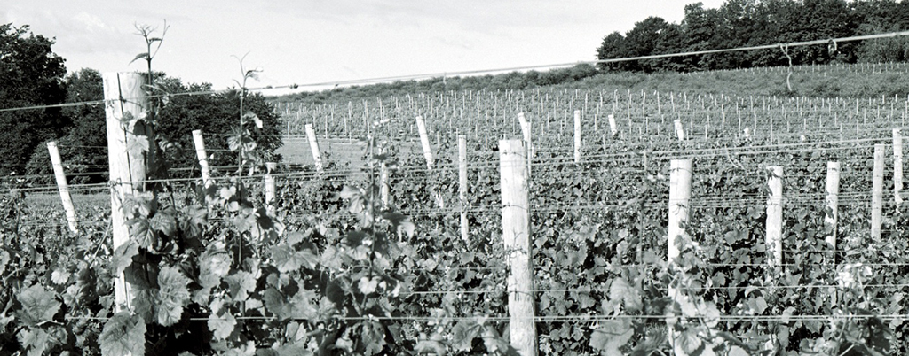
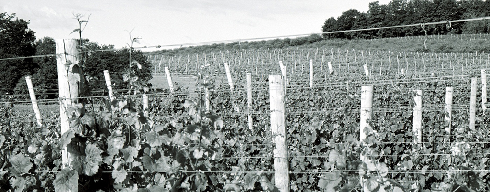

|
Public Wine Tasting? Laurentide Winery tasting room provides public tastings and sales of all of our currently released vintages. See Contact page for hours. Private Wine Tasting? We are also available for private tasting before or after hours by appointment and special arrangement or for larger groups by appointment only. Any groups over 10 during standard hours please make an appointment OR for more information about private wine tastings please call (231) 994-2147. Special Event? Laurentide Winery tasting room is available for wedding rehearsals, receptions, reunions and parties. We can accommodate up to 99 people. Please call (231) 994-2147 or email info@laurentidewinery.com for more details. |
Laurentide Sauvignon Blanc Traditional grape of Bordeaux and Sancerre, dry and distinctive aromas Laurentide Pinot Noir Burgundian premium varietal, dry and aged in oak barrels Pinot Noir Rose Seductive Dry Rose |
|||
|
|
||||